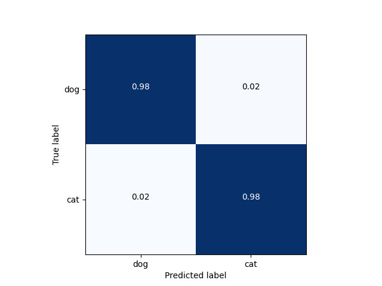

<!DOCTYPE html>
<!--[if IE 8]><html class="no-js lt-ie9" lang="en" > <![endif]-->
<!--[if gt IE 8]><!--> <html class="no-js" lang="en" > <!--<![endif]-->
<head>
  <meta charset="utf-8">
  
  <meta name="viewport" content="width=device-width, initial-scale=1.0">
  
  <title>Transfer learning with MobileNet for cats vs. dogs &mdash; Akida Examples  documentation</title>
  

  
  
    <link rel="shortcut icon" href="../_static/favicon.ico"/>
  
  
  

  
  <script type="text/javascript" src="../_static/js/modernizr.min.js"></script>
  
    
      <script type="text/javascript" id="documentation_options" data-url_root="../" src="../_static/documentation_options.js"></script>
        <script type="text/javascript" src="../_static/jquery.js"></script>
        <script type="text/javascript" src="../_static/underscore.js"></script>
        <script type="text/javascript" src="../_static/doctools.js"></script>
        <script type="text/javascript" src="../_static/language_data.js"></script>
    
    <script type="text/javascript" src="../_static/js/theme.js"></script>

    

  
  <link rel="stylesheet" href="../_static/css/theme.css" type="text/css" />
  <link rel="stylesheet" href="../_static/pygments.css" type="text/css" />
  <link rel="stylesheet" href="../_static/gallery.css" type="text/css" />
    <link rel="index" title="Index" href="../genindex.html" />
    <link rel="search" title="Search" href="../search.html" />
    <link rel="next" title="MobileNet/ImageNet inference" href="plot_mobilenet_imagenet.html" />
    <link rel="prev" title="VGG and MobileNet/CIFAR10 inference" href="plot_vgg_mobilenet_cifar10.html" /> 
</head>

<body class="wy-body-for-nav">

   
  <div class="wy-grid-for-nav">
    
    <nav data-toggle="wy-nav-shift" class="wy-nav-side">
      <div class="wy-side-scroll">
        <div class="wy-side-nav-search"  style="background: #3f51b5" >
          

          
            <a href="../index.html">
          

          
            
            
          
          </a>

          
            
            
              <div class="version">
                Akida 1.8.1
              </div>
            
          

          
<div role="search">
  <form id="rtd-search-form" class="wy-form" action="../search.html" method="get">
    <input type="text" name="q" placeholder="Search docs" />
    <input type="hidden" name="check_keywords" value="yes" />
    <input type="hidden" name="area" value="default" />
  </form>
</div>

          
        </div>

        <div class="wy-menu wy-menu-vertical" data-spy="affix" role="navigation" aria-label="main navigation">
          
            
            
              
            
            
              <ul class="current">
<li class="toctree-l1"><a class="reference internal" href="../index.html">Overview</a></li>
<li class="toctree-l1"><a class="reference internal" href="../installation.html">Installation</a><ul>
<li class="toctree-l2"><a class="reference internal" href="../installation.html#requirements">Requirements</a></li>
<li class="toctree-l2"><a class="reference internal" href="../installation.html#quick-installation">Quick installation</a></li>
<li class="toctree-l2"><a class="reference internal" href="../installation.html#running-examples">Running examples</a></li>
</ul>
</li>
<li class="toctree-l1"><a class="reference internal" href="../user_guide/user_guide.html">User guide</a><ul>
<li class="toctree-l2"><a class="reference internal" href="../user_guide/getting_started.html">Getting started</a><ul>
<li class="toctree-l3"><a class="reference internal" href="../user_guide/getting_started.html#for-beginners">For beginners</a></li>
<li class="toctree-l3"><a class="reference internal" href="../user_guide/getting_started.html#for-users-familiar-with-deep-learning">For users familiar with deep-learning</a></li>
</ul>
</li>
<li class="toctree-l2"><a class="reference internal" href="../user_guide/aee.html">Akida user guide</a><ul>
<li class="toctree-l3"><a class="reference internal" href="../user_guide/aee.html#the-akida-execution-engine">The Akida Execution Engine</a><ul>
<li class="toctree-l4"><a class="reference internal" href="../user_guide/aee.html#id1">1. The Spiking Neural Network model</a></li>
<li class="toctree-l4"><a class="reference internal" href="../user_guide/aee.html#id2">2. Input data format</a></li>
<li class="toctree-l4"><a class="reference internal" href="../user_guide/aee.html#id3">3. Determine training mode</a></li>
<li class="toctree-l4"><a class="reference internal" href="../user_guide/aee.html#id4">4. Interpreting outputs</a></li>
</ul>
</li>
<li class="toctree-l3"><a class="reference internal" href="../user_guide/aee.html#neural-network-model">Neural Network model</a><ul>
<li class="toctree-l4"><a class="reference internal" href="../user_guide/aee.html#specifying-the-neural-network-model">Specifying the Neural Network model</a></li>
<li class="toctree-l4"><a class="reference internal" href="../user_guide/aee.html#saving-and-loading">Saving and loading</a></li>
<li class="toctree-l4"><a class="reference internal" href="../user_guide/aee.html#input-layer-types">Input layer types</a></li>
<li class="toctree-l4"><a class="reference internal" href="../user_guide/aee.html#data-processing-layer-types">Data-Processing layer types</a></li>
</ul>
</li>
<li class="toctree-l3"><a class="reference internal" href="../user_guide/aee.html#id5">Using Akida Unsupervised Learning</a><ul>
<li class="toctree-l4"><a class="reference internal" href="../user_guide/aee.html#learning-constraints">Learning constraints</a></li>
<li class="toctree-l4"><a class="reference internal" href="../user_guide/aee.html#compiling-a-layer">Compiling a layer</a></li>
<li class="toctree-l4"><a class="reference internal" href="../user_guide/aee.html#id7">Learning parameters</a></li>
</ul>
</li>
</ul>
</li>
<li class="toctree-l2"><a class="reference internal" href="../user_guide/cnn2snn.html">CNN2SNN toolkit</a><ul>
<li class="toctree-l3"><a class="reference internal" href="../user_guide/cnn2snn.html#overview">Overview</a><ul>
<li class="toctree-l4"><a class="reference internal" href="../user_guide/cnn2snn.html#conversion-workflow">Conversion Workflow</a></li>
<li class="toctree-l4"><a class="reference internal" href="../user_guide/cnn2snn.html#compatibility-constraints">Compatibility Constraints</a></li>
<li class="toctree-l4"><a class="reference internal" href="../user_guide/cnn2snn.html#typical-training-scenario">Typical training scenario</a></li>
</ul>
</li>
<li class="toctree-l3"><a class="reference internal" href="../user_guide/cnn2snn.html#layers-considerations">Layers Considerations</a><ul>
<li class="toctree-l4"><a class="reference internal" href="../user_guide/cnn2snn.html#supported-layer-types">Supported layer types</a></li>
<li class="toctree-l4"><a class="reference internal" href="../user_guide/cnn2snn.html#quantization-aware-layers">Quantization-aware layers</a></li>
<li class="toctree-l4"><a class="reference internal" href="../user_guide/cnn2snn.html#training-only-layers">Training-Only Layers</a></li>
<li class="toctree-l4"><a class="reference internal" href="../user_guide/cnn2snn.html#first-layers">First Layers</a></li>
<li class="toctree-l4"><a class="reference internal" href="../user_guide/cnn2snn.html#id6">Final Layers</a></li>
</ul>
</li>
<li class="toctree-l3"><a class="reference internal" href="../user_guide/cnn2snn.html#layer-blocks">Layer Blocks</a><ul>
<li class="toctree-l4"><a class="reference internal" href="../user_guide/cnn2snn.html#id7">Overview</a></li>
<li class="toctree-l4"><a class="reference internal" href="../user_guide/cnn2snn.html#conv-block"><code class="docutils literal notranslate"><span class="pre">conv_block</span></code></a></li>
<li class="toctree-l4"><a class="reference internal" href="../user_guide/cnn2snn.html#dense-block"><code class="docutils literal notranslate"><span class="pre">dense_block</span></code></a></li>
<li class="toctree-l4"><a class="reference internal" href="../user_guide/cnn2snn.html#separable-conv-block"><code class="docutils literal notranslate"><span class="pre">separable_conv_block</span></code></a></li>
</ul>
</li>
<li class="toctree-l3"><a class="reference internal" href="../user_guide/cnn2snn.html#tips-and-tricks">Tips and Tricks</a></li>
</ul>
</li>
<li class="toctree-l2"><a class="reference internal" href="../user_guide/hw_constraints.html">Hardware constraints</a><ul>
<li class="toctree-l3"><a class="reference internal" href="../user_guide/hw_constraints.html#input-layer">Input layer</a></li>
<li class="toctree-l3"><a class="reference internal" href="../user_guide/hw_constraints.html#data-processing-layers">Data-Processing layers</a><ul>
<li class="toctree-l4"><a class="reference internal" href="../user_guide/hw_constraints.html#convolutional-layer">Convolutional layer</a></li>
<li class="toctree-l4"><a class="reference internal" href="../user_guide/hw_constraints.html#fully-connected-layer">Fully connected layer</a></li>
</ul>
</li>
</ul>
</li>
</ul>
</li>
<li class="toctree-l1"><a class="reference internal" href="../api_reference/api_reference.html">API reference</a><ul>
<li class="toctree-l2"><a class="reference internal" href="../api_reference/aee_apis.html">Akida Execution Engine</a><ul>
<li class="toctree-l3"><a class="reference internal" href="../api_reference/aee_apis.html#model">Model</a></li>
<li class="toctree-l3"><a class="reference internal" href="../api_reference/aee_apis.html#layer">Layer</a></li>
<li class="toctree-l3"><a class="reference internal" href="../api_reference/aee_apis.html#layerstatistics">LayerStatistics</a></li>
<li class="toctree-l3"><a class="reference internal" href="../api_reference/aee_apis.html#observer">Observer</a></li>
<li class="toctree-l3"><a class="reference internal" href="../api_reference/aee_apis.html#inputdata">InputData</a></li>
<li class="toctree-l3"><a class="reference internal" href="../api_reference/aee_apis.html#inputconvolutional">InputConvolutional</a></li>
<li class="toctree-l3"><a class="reference internal" href="../api_reference/aee_apis.html#inputbcspike">InputBCSpike</a></li>
<li class="toctree-l3"><a class="reference internal" href="../api_reference/aee_apis.html#fullyconnected">FullyConnected</a></li>
<li class="toctree-l3"><a class="reference internal" href="../api_reference/aee_apis.html#convolutional">Convolutional</a></li>
<li class="toctree-l3"><a class="reference internal" href="../api_reference/aee_apis.html#separableconvolutional">SeparableConvolutional</a></li>
<li class="toctree-l3"><a class="reference internal" href="../api_reference/aee_apis.html#dense">Dense</a></li>
<li class="toctree-l3"><a class="reference internal" href="../api_reference/aee_apis.html#sparse">Sparse</a></li>
<li class="toctree-l3"><a class="reference internal" href="../api_reference/aee_apis.html#coords-to-sparse">coords_to_sparse</a></li>
<li class="toctree-l3"><a class="reference internal" href="../api_reference/aee_apis.html#dense-to-sparse">dense_to_sparse</a></li>
<li class="toctree-l3"><a class="reference internal" href="../api_reference/aee_apis.html#packetize">packetize</a></li>
<li class="toctree-l3"><a class="reference internal" href="../api_reference/aee_apis.html#backendtype">BackendType</a></li>
<li class="toctree-l3"><a class="reference internal" href="../api_reference/aee_apis.html#convolutionmode">ConvolutionMode</a></li>
<li class="toctree-l3"><a class="reference internal" href="../api_reference/aee_apis.html#poolingtype">PoolingType</a></li>
<li class="toctree-l3"><a class="reference internal" href="../api_reference/aee_apis.html#learningtype">LearningType</a></li>
</ul>
</li>
<li class="toctree-l2"><a class="reference internal" href="../api_reference/cnn2snn_apis.html">CNN2SNN</a><ul>
<li class="toctree-l3"><a class="reference internal" href="../api_reference/cnn2snn_apis.html#convert">convert</a></li>
<li class="toctree-l3"><a class="reference internal" href="../api_reference/cnn2snn_apis.html#check-model-compatibility">check_model_compatibility</a></li>
<li class="toctree-l3"><a class="reference internal" href="../api_reference/cnn2snn_apis.html#weightquantizer">WeightQuantizer</a></li>
<li class="toctree-l3"><a class="reference internal" href="../api_reference/cnn2snn_apis.html#weightfloat">WeightFloat</a></li>
<li class="toctree-l3"><a class="reference internal" href="../api_reference/cnn2snn_apis.html#quantizedconv2d">QuantizedConv2D</a></li>
<li class="toctree-l3"><a class="reference internal" href="../api_reference/cnn2snn_apis.html#quantizeddepthwiseconv2d">QuantizedDepthwiseConv2D</a></li>
<li class="toctree-l3"><a class="reference internal" href="../api_reference/cnn2snn_apis.html#quantizeddense">QuantizedDense</a></li>
<li class="toctree-l3"><a class="reference internal" href="../api_reference/cnn2snn_apis.html#quantizedseparableconv2d">QuantizedSeparableConv2D</a></li>
<li class="toctree-l3"><a class="reference internal" href="../api_reference/cnn2snn_apis.html#activationdiscreterelu">ActivationDiscreteRelu</a></li>
</ul>
</li>
<li class="toctree-l2"><a class="reference internal" href="../api_reference/akida_models_apis.html">Akida models</a><ul>
<li class="toctree-l3"><a class="reference internal" href="../api_reference/akida_models_apis.html#quantization-blocks">Quantization blocks</a><ul>
<li class="toctree-l4"><a class="reference internal" href="../api_reference/akida_models_apis.html#conv-block">conv_block</a></li>
<li class="toctree-l4"><a class="reference internal" href="../api_reference/akida_models_apis.html#separable-conv-block">separable_conv_block</a></li>
<li class="toctree-l4"><a class="reference internal" href="../api_reference/akida_models_apis.html#dense-block">dense_block</a></li>
</ul>
</li>
<li class="toctree-l3"><a class="reference internal" href="../api_reference/akida_models_apis.html#model-zoo">Model zoo</a><ul>
<li class="toctree-l4"><a class="reference internal" href="../api_reference/akida_models_apis.html#mobilenet">Mobilenet</a></li>
<li class="toctree-l4"><a class="reference internal" href="../api_reference/akida_models_apis.html#vgg">VGG</a></li>
</ul>
</li>
</ul>
</li>
</ul>
</li>
<li class="toctree-l1 current"><a class="reference internal" href="index.html">Examples</a><ul class="current">
<li class="toctree-l2"><a class="reference internal" href="plot_gxnor_mnist.html">GXNOR/MNIST inference</a><ul>
<li class="toctree-l3"><a class="reference internal" href="plot_gxnor_mnist.html#loading-the-mnist-dataset">1. Loading the MNIST dataset</a></li>
<li class="toctree-l3"><a class="reference internal" href="plot_gxnor_mnist.html#look-at-some-images-from-the-test-dataset">2. Look at some images from the test dataset</a></li>
<li class="toctree-l3"><a class="reference internal" href="plot_gxnor_mnist.html#load-the-pre-trained-akida-model">3. Load the pre-trained Akida model</a></li>
<li class="toctree-l3"><a class="reference internal" href="plot_gxnor_mnist.html#classify-a-single-image">4. Classify a single image</a></li>
<li class="toctree-l3"><a class="reference internal" href="plot_gxnor_mnist.html#check-performance-across-a-number-of-samples">5. Check performance across a number of samples</a></li>
</ul>
</li>
<li class="toctree-l2"><a class="reference internal" href="plot_regression.html">Regression tutorial</a><ul>
<li class="toctree-l3"><a class="reference internal" href="plot_regression.html#load-dependencies">1. Load dependencies</a></li>
<li class="toctree-l3"><a class="reference internal" href="plot_regression.html#load-the-dataset">2. Load the dataset</a></li>
<li class="toctree-l3"><a class="reference internal" href="plot_regression.html#create-a-keras-model-satisfying-akida-nsoc-requirements">3. Create a Keras model satisfying Akida NSoC requirements</a></li>
<li class="toctree-l3"><a class="reference internal" href="plot_regression.html#check-performance">4. Check performance</a></li>
<li class="toctree-l3"><a class="reference internal" href="plot_regression.html#conversion-to-akida">5. Conversion to Akida</a><ul>
<li class="toctree-l4"><a class="reference internal" href="plot_regression.html#convert-the-trained-keras-model-to-akida">5.1 Convert the trained Keras model to Akida</a></li>
<li class="toctree-l4"><a class="reference internal" href="plot_regression.html#check-akida-model-accuracy">5.2 Check Akida model accuracy</a></li>
</ul>
</li>
<li class="toctree-l3"><a class="reference internal" href="plot_regression.html#estimate-age-on-a-single-image">6. Estimate age on a single image</a></li>
</ul>
</li>
<li class="toctree-l2"><a class="reference internal" href="plot_mobilenet_kws.html">MobileNet/KWS inference</a><ul>
<li class="toctree-l3"><a class="reference internal" href="plot_mobilenet_kws.html#load-cnn2snn-tool-dependencies">1. Load CNN2SNN tool dependencies</a></li>
<li class="toctree-l3"><a class="reference internal" href="plot_mobilenet_kws.html#load-the-preprocessed-dataset">2. Load the preprocessed dataset</a></li>
<li class="toctree-l3"><a class="reference internal" href="plot_mobilenet_kws.html#create-a-keras-model-satisfying-akida-nsoc-requirements">3. Create a Keras model satisfying Akida NSoC requirements</a></li>
<li class="toctree-l3"><a class="reference internal" href="plot_mobilenet_kws.html#check-performance">4. Check performance</a></li>
<li class="toctree-l3"><a class="reference internal" href="plot_mobilenet_kws.html#conversion-to-akida">5. Conversion to Akida</a><ul>
<li class="toctree-l4"><a class="reference internal" href="plot_mobilenet_kws.html#convert-the-trained-keras-model-to-akida">5.1 Convert the trained Keras model to Akida</a></li>
<li class="toctree-l4"><a class="reference internal" href="plot_mobilenet_kws.html#check-prediction-accuracy">5.2 Check prediction accuracy</a></li>
<li class="toctree-l4"><a class="reference internal" href="plot_mobilenet_kws.html#confusion-matrix">5.3 Confusion matrix</a></li>
</ul>
</li>
</ul>
</li>
<li class="toctree-l2"><a class="reference internal" href="plot_vgg_mobilenet_cifar10.html">VGG and MobileNet/CIFAR10 inference</a><ul>
<li class="toctree-l3"><a class="reference internal" href="plot_vgg_mobilenet_cifar10.html#load-cnn2snn-tool-dependencies">1. Load CNN2SNN tool dependencies</a></li>
<li class="toctree-l3"><a class="reference internal" href="plot_vgg_mobilenet_cifar10.html#load-and-reshape-cifar10-dataset">2. Load and reshape CIFAR10 dataset</a></li>
<li class="toctree-l3"><a class="reference internal" href="plot_vgg_mobilenet_cifar10.html#create-a-quantized-keras-vgg-model">3. Create a quantized Keras VGG model</a><ul>
<li class="toctree-l4"><a class="reference internal" href="plot_vgg_mobilenet_cifar10.html#a-instantiate-keras-model">3.A Instantiate Keras model</a></li>
<li class="toctree-l4"><a class="reference internal" href="plot_vgg_mobilenet_cifar10.html#b-check-performance">3.B Check performance</a></li>
</ul>
</li>
<li class="toctree-l3"><a class="reference internal" href="plot_vgg_mobilenet_cifar10.html#conversion-to-akida">4. Conversion to Akida</a><ul>
<li class="toctree-l4"><a class="reference internal" href="plot_vgg_mobilenet_cifar10.html#a-convert-to-akida-model">4.A Convert to Akida model</a></li>
<li class="toctree-l4"><a class="reference internal" href="plot_vgg_mobilenet_cifar10.html#b-check-hardware-compliancy">4.B Check hardware compliancy</a></li>
<li class="toctree-l4"><a class="reference internal" href="plot_vgg_mobilenet_cifar10.html#c-check-performance">4.C Check performance</a></li>
</ul>
</li>
<li class="toctree-l3"><a class="reference internal" href="plot_vgg_mobilenet_cifar10.html#create-a-quantized-keras-mobilenet-model">5. Create a quantized Keras MobileNet model</a><ul>
<li class="toctree-l4"><a class="reference internal" href="plot_vgg_mobilenet_cifar10.html#a-instantiate-keras-mobilenet-model">5.A Instantiate Keras MobileNet model</a></li>
<li class="toctree-l4"><a class="reference internal" href="plot_vgg_mobilenet_cifar10.html#id1">5.B Check performance</a></li>
</ul>
</li>
<li class="toctree-l3"><a class="reference internal" href="plot_vgg_mobilenet_cifar10.html#id2">6. Conversion to Akida</a><ul>
<li class="toctree-l4"><a class="reference internal" href="plot_vgg_mobilenet_cifar10.html#id3">6.A Convert to Akida model</a></li>
<li class="toctree-l4"><a class="reference internal" href="plot_vgg_mobilenet_cifar10.html#id4">6.B Check hardware compliancy</a></li>
<li class="toctree-l4"><a class="reference internal" href="plot_vgg_mobilenet_cifar10.html#id5">6.C Check performance</a></li>
<li class="toctree-l4"><a class="reference internal" href="plot_vgg_mobilenet_cifar10.html#d-show-predictions-for-a-random-image">6D. Show predictions for a random image</a></li>
</ul>
</li>
</ul>
</li>
<li class="toctree-l2 current"><a class="current reference internal" href="#">Transfer learning with MobileNet for cats vs. dogs</a><ul>
<li class="toctree-l3"><a class="reference internal" href="#transfer-learning-process">1. Transfer learning process</a></li>
<li class="toctree-l3"><a class="reference internal" href="#load-and-preprocess-data">2. Load and preprocess data</a><ul>
<li class="toctree-l4"><a class="reference internal" href="#a-load-and-split-data">2.A - Load and split data</a></li>
<li class="toctree-l4"><a class="reference internal" href="#b-preprocess-the-test-set">2.B - Preprocess the test set</a></li>
<li class="toctree-l4"><a class="reference internal" href="#c-get-labels">2.C - Get labels</a></li>
</ul>
</li>
<li class="toctree-l3"><a class="reference internal" href="#convert-a-quantized-keras-model-to-akida">3. Convert a quantized Keras model to Akida</a><ul>
<li class="toctree-l4"><a class="reference internal" href="#a-instantiate-a-keras-base-model">3.A - Instantiate a Keras base model</a></li>
<li class="toctree-l4"><a class="reference internal" href="#b-modify-the-network-and-load-pre-trained-weights">3.B - Modify the network and load pre-trained weights</a></li>
<li class="toctree-l4"><a class="reference internal" href="#c-convert-to-akida">3.C - Convert to Akida</a></li>
</ul>
</li>
<li class="toctree-l3"><a class="reference internal" href="#classify-test-images">4. Classify test images</a><ul>
<li class="toctree-l4"><a class="reference internal" href="#a-classify-test-images">4.A Classify test images</a></li>
<li class="toctree-l4"><a class="reference internal" href="#b-compare-results">4.B Compare results</a></li>
</ul>
</li>
</ul>
</li>
<li class="toctree-l2"><a class="reference internal" href="plot_mobilenet_imagenet.html">MobileNet/ImageNet inference</a><ul>
<li class="toctree-l3"><a class="reference internal" href="plot_mobilenet_imagenet.html#load-cnn2snn-tool-dependencies">1. Load CNN2SNN tool dependencies</a></li>
<li class="toctree-l3"><a class="reference internal" href="plot_mobilenet_imagenet.html#load-test-images-from-imagenet">2. Load test images from ImageNet</a><ul>
<li class="toctree-l4"><a class="reference internal" href="plot_mobilenet_imagenet.html#load-test-images-and-preprocess-test-images">2.1 Load test images and preprocess test images</a></li>
<li class="toctree-l4"><a class="reference internal" href="plot_mobilenet_imagenet.html#load-labels">2.2 Load labels</a></li>
</ul>
</li>
<li class="toctree-l3"><a class="reference internal" href="plot_mobilenet_imagenet.html#create-a-quantized-keras-model">3. Create a quantized Keras model</a><ul>
<li class="toctree-l4"><a class="reference internal" href="plot_mobilenet_imagenet.html#instantiate-keras-model">3.1 Instantiate Keras model</a></li>
<li class="toctree-l4"><a class="reference internal" href="plot_mobilenet_imagenet.html#check-performance-of-the-keras-model">3.2 Check performance of the Keras model</a></li>
</ul>
</li>
<li class="toctree-l3"><a class="reference internal" href="plot_mobilenet_imagenet.html#convert-keras-model-for-akida-nsoc">4. Convert Keras model for Akida NSoC</a><ul>
<li class="toctree-l4"><a class="reference internal" href="plot_mobilenet_imagenet.html#convert-keras-model-to-an-akida-compatible-model">4.1 Convert Keras model to an Akida compatible model</a></li>
<li class="toctree-l4"><a class="reference internal" href="plot_mobilenet_imagenet.html#test-performance-of-the-akida-model">4.2 Test performance of the Akida model</a></li>
<li class="toctree-l4"><a class="reference internal" href="plot_mobilenet_imagenet.html#show-predictions-for-a-random-test-image">4.3 Show predictions for a random test image</a></li>
</ul>
</li>
</ul>
</li>
<li class="toctree-l2"><a class="reference internal" href="plot_cnn_flow.html">CNN conversion flow tutorial</a><ul>
<li class="toctree-l3"><a class="reference internal" href="plot_cnn_flow.html#system-configuration">1. System configuration</a><ul>
<li class="toctree-l4"><a class="reference internal" href="plot_cnn_flow.html#load-cnn2snn-tool-dependencies">1.1 Load CNN2SNN tool dependencies</a></li>
<li class="toctree-l4"><a class="reference internal" href="plot_cnn_flow.html#load-and-reshape-mnist-dataset">1.2 Load and reshape MNIST dataset</a></li>
<li class="toctree-l4"><a class="reference internal" href="plot_cnn_flow.html#set-training-parameters">1.3 Set training parameters</a></li>
</ul>
</li>
<li class="toctree-l3"><a class="reference internal" href="plot_cnn_flow.html#model-creation-and-performance-check">2. Model creation and performance check</a><ul>
<li class="toctree-l4"><a class="reference internal" href="plot_cnn_flow.html#model-creation">2.1 Model creation</a></li>
<li class="toctree-l4"><a class="reference internal" href="plot_cnn_flow.html#performance-check">2.2 Performance check</a></li>
</ul>
</li>
<li class="toctree-l3"><a class="reference internal" href="plot_cnn_flow.html#model-akida-compatibility-check-and-changes">3. Model Akida-compatibility check and changes</a><ul>
<li class="toctree-l4"><a class="reference internal" href="plot_cnn_flow.html#compatibility-check">3.1 Compatibility check</a></li>
<li class="toctree-l4"><a class="reference internal" href="plot_cnn_flow.html#model-adaptation">3.2 Model adaptation</a></li>
<li class="toctree-l4"><a class="reference internal" href="plot_cnn_flow.html#id1">3.3 Performance check</a></li>
</ul>
</li>
<li class="toctree-l3"><a class="reference internal" href="plot_cnn_flow.html#model-quantization-and-training">4. Model quantization and training</a><ul>
<li class="toctree-l4"><a class="reference internal" href="plot_cnn_flow.html#quantize-the-model">4.1 Quantize the model</a></li>
<li class="toctree-l4"><a class="reference internal" href="plot_cnn_flow.html#id2">4.2 Performance check</a></li>
</ul>
</li>
<li class="toctree-l3"><a class="reference internal" href="plot_cnn_flow.html#convert-trained-model-for-akida-and-test">5. Convert trained model for Akida and test</a><ul>
<li class="toctree-l4"><a class="reference internal" href="plot_cnn_flow.html#final-conversion">5.1 Final conversion</a></li>
<li class="toctree-l4"><a class="reference internal" href="plot_cnn_flow.html#performances-check-with-the-akida-execution-engine">5.2 Performances check with the Akida Execution Engine</a></li>
</ul>
</li>
</ul>
</li>
</ul>
</li>
<li class="toctree-l1"><a class="reference external" href="https://github.com/Brainchip-Inc/akida_examples/releases">Changelog</a></li>
<li class="toctree-l1"><a class="reference external" href="https://support.brainchip.com/portal/home">Support</a></li>
<li class="toctree-l1"><a class="reference internal" href="../license.html">License</a></li>
</ul>

            
          
        </div>
      </div>
    </nav>

    <section data-toggle="wy-nav-shift" class="wy-nav-content-wrap">

      
      <nav class="wy-nav-top" aria-label="top navigation">
        
          <i data-toggle="wy-nav-top" class="fa fa-bars"></i>
          <a href="../index.html">Akida Examples</a>
        
      </nav>


      <div class="wy-nav-content">
        
        <div class="rst-content">
        
          


<div role="navigation" aria-label="breadcrumbs navigation">

  <ul class="wy-breadcrumbs">
    
      <li><a href="../index.html">Docs</a> &raquo;</li>
        
          <li><a href="index.html">Akida examples</a> &raquo;</li>
        
      <li>Transfer learning with MobileNet for cats vs. dogs</li>
    
    
      <li class="wy-breadcrumbs-aside">
        
            
        
      </li>
    
  </ul>

  
  <hr/>
</div>
          <div role="main" class="document" itemscope="itemscope" itemtype="http://schema.org/Article">
           <div itemprop="articleBody">
            
  <div class="sphx-glr-download-link-note admonition note">
<p class="admonition-title">Note</p>
<p>Click <a class="reference internal" href="#sphx-glr-download-examples-plot-transfer-learning-py"><span class="std std-ref">here</span></a> to download the full example code</p>
</div>
<div class="sphx-glr-example-title section" id="transfer-learning-with-mobilenet-for-cats-vs-dogs">
<span id="sphx-glr-examples-plot-transfer-learning-py"></span><h1>Transfer learning with MobileNet for cats vs. dogs<a class="headerlink" href="#transfer-learning-with-mobilenet-for-cats-vs-dogs" title="Permalink to this headline">¶</a></h1>
<p>This tutorial presents a demonstration of transfer learning and the
conversion to an Akida model of a quantized Keras network.</p>
<p>The transfer learning example is derived from the <a class="reference external" href="https://www.tensorflow.org/tutorials/images/transfer_learning">Tensorflow
tutorial</a>:</p>
<blockquote>
<div><ul class="simple">
<li><p>Our base model is an Akida-compatible version of <strong>MobileNet v1</strong>,
trained on ImageNet.</p></li>
<li><p>The new dataset for transfer learning is <strong>cats vs. dogs</strong>
(<a class="reference external" href="https://www.tensorflow.org/datasets/catalog/cats_vs_dogs">link</a>).</p></li>
<li><p>We use transfer learning to customize the model to the new task of
classifying cats and dogs.</p></li>
</ul>
</div></blockquote>
<div class="admonition note">
<p class="admonition-title">Note</p>
<p>This tutorial only shows the inference of the trained Keras
model and its conversion to an Akida network. A textual explanation
of the training is given below.</p>
</div>
<div class="section" id="transfer-learning-process">
<h2>1. Transfer learning process<a class="headerlink" href="#transfer-learning-process" title="Permalink to this headline">¶</a></h2>
<div class="figure align-center">
<a class="reference external image-reference" href="https://s2.qwant.com/thumbr/0x380/7/0/7b7386531ea24ab1294fdf9b8698b008a51e38a3c57e81427fbef626ff226c/1*6ACbDsBMeDZcLg9W8CFT_Q.png?u=https%3A%2F%2Fcdn-images-1.medium.com%2Fmax%2F1600%2F1%2A6ACbDsBMeDZcLg9W8CFT_Q.png&amp;q=0&amp;b=1&amp;p=0&amp;a=1"></a>
</div>
<p>Transfer learning allows to classify on a specific task by using a
pre-trained base model. For an introduction to transfer learning, please
refer to the <a class="reference external" href="https://www.tensorflow.org/tutorials/images/transfer_learning">Tensorflow
tutorial</a>
before exploring this tutorial. Here, we focus on how to quantize the
Keras model in order to convert it to an Akida one.</p>
<p>The model is composed of:</p>
<blockquote>
<div><ul class="simple">
<li><p>a base quantized MobileNet model used to extract image features</p></li>
<li><p>a top layer to classify cats and dogs</p></li>
<li><p>a sigmoid activation function to interpret model outputs as a probability</p></li>
</ul>
</div></blockquote>
<p><strong>Base model</strong></p>
<p>The base model is an Akida-compatible version of MobileNet v1. This
model was trained and quantized using the ImageNet dataset. Please refer
to the corresponding <a class="reference external" href="plot_mobilenet_imagenet.html">example</a> for
more information. The layers have 4-bit weights (except for the first
layer having 8-bit weights) and the activations are quantized to 4 bits.
This base model ends with a global average pooling whose output is (1,
1, 1024).</p>
<p>In our transfer learning process, the base model is frozen, i.e., the
weights are not updated during training. Pre-trained weights for the
quantized model are provided on
<a class="reference external" href="http://data.brainchip.com/models/mobilenet/">http://data.brainchip.com/models/mobilenet/</a>. These are
loaded in our frozen base model.</p>
<p><strong>Top layer</strong></p>
<p>While the Tensorflow tutorial uses a fully-connected top layer with one
output neuron, the only Akida layer supporting 4-bit weights is a separable
convolutional layer (see <a class="reference external" href="../user_guide/hw_constraints.html">hardware compatibility</a>).</p>
<p>We thus decided to use a separable convolutional layer with one output
neuron for the top layer of our model.</p>
<p><strong>Final activation</strong></p>
<p>ReLU6 is the only activation function that can be converted into an Akida SNN
equivalent. The converted Akida model doesn’t therefore include the ‘sigmoid’
activation, and we must instead apply it explicitly on the raw values returned
by the model Top layer.</p>
<p><strong>Training steps</strong></p>
<p>The transfer learning process consists in two training phases:</p>
<blockquote>
<div><ol class="arabic simple">
<li><p><strong>Float top layer training</strong>: The base model is quantized using 4-bit
weights and activations. Pre-trained 4-bit weights of MobileNet/ImageNet
are loaded. Then a top layer is added with float weights. The base model
is frozen and the training is only applied on the top layer. After 10
epochs, the weights are saved. Note that the weights of the layers of
the frozen base model haven’t changed; only those of the top layer are
updated.</p></li>
<li><p><strong>4-bit top layer training</strong>: The base model is still
quantized using 4-bit weights and activations. The added top layer is
now quantized (4-bit weights). The weights saved at step 1 are used as
initialization. The base model is frozen and the training is only
applied on the top layer. After 10 epochs, the new quantized weights are
saved. This final weights are those used in the inference below.</p></li>
</ol>
</div></blockquote>
<table class="docutils align-default">
<colgroup>
<col style="width: 15%" />
<col style="width: 29%" />
<col style="width: 18%" />
<col style="width: 14%" />
<col style="width: 18%" />
<col style="width: 6%" />
</colgroup>
<thead>
<tr class="row-odd"><th class="head"><p>Training
step</p></th>
<th class="head"><p>Frozen base model</p></th>
<th class="head"><p>Init.
weights
base model</p></th>
<th class="head"><p>Top
layer</p></th>
<th class="head"><p>Init.
weights
top layer</p></th>
<th class="head"><p>E
p
o
c
h
s</p></th>
</tr>
</thead>
<tbody>
<tr class="row-even"><td><p>step 1</p></td>
<td><p>4-bit weights /
activations</p></td>
<td><p>pre-trained
4-bit</p></td>
<td><p>float
weights</p></td>
<td><p>random</p></td>
<td><p>10</p></td>
</tr>
<tr class="row-odd"><td><p>step 2</p></td>
<td><p>4-bit weights /
activations</p></td>
<td><p>pre-trained
4-bit</p></td>
<td><p>4-bit
weights</p></td>
<td><p>saved from
step 1</p></td>
<td><p>10</p></td>
</tr>
</tbody>
</table>
<div class="highlight-default notranslate"><div class="highlight"><pre><span></span><span class="kn">import</span> <span class="nn">os</span>
<span class="kn">import</span> <span class="nn">numpy</span> <span class="k">as</span> <span class="nn">np</span>
<span class="kn">import</span> <span class="nn">tensorflow</span> <span class="k">as</span> <span class="nn">tf</span>
<span class="kn">import</span> <span class="nn">tensorflow_datasets</span> <span class="k">as</span> <span class="nn">tfds</span>
<span class="kn">import</span> <span class="nn">matplotlib.pyplot</span> <span class="k">as</span> <span class="nn">plt</span>

<span class="kn">from</span> <span class="nn">akida_models</span> <span class="kn">import</span> <span class="n">mobilenet_imagenet</span>
<span class="kn">from</span> <span class="nn">cnn2snn</span> <span class="kn">import</span> <span class="n">convert</span>
<span class="kn">from</span> <span class="nn">akida_models.quantization_blocks</span> <span class="kn">import</span> <span class="n">separable_conv_block</span>
</pre></div>
</div>
</div>
<div class="section" id="load-and-preprocess-data">
<h2>2. Load and preprocess data<a class="headerlink" href="#load-and-preprocess-data" title="Permalink to this headline">¶</a></h2>
<p>In this section, we will load the ‘cats_vs_dogs’ dataset preprocess
the data to match the required model’s inputs:</p>
<blockquote>
<div><ul class="simple">
<li><p><strong>2.A - Load and split data</strong>: we only keep the test set which represents
10% of the dataset.</p></li>
<li><p><strong>2.B - Preprocess the test set</strong> by resizing and rescaling the images.</p></li>
<li><p><strong>2.C - Get labels</strong></p></li>
</ul>
</div></blockquote>
<div class="section" id="a-load-and-split-data">
<h3>2.A - Load and split data<a class="headerlink" href="#a-load-and-split-data" title="Permalink to this headline">¶</a></h3>
<p>The <code class="docutils literal notranslate"><span class="pre">cats_vs_dogs</span></code>
<a class="reference external" href="https://www.tensorflow.org/datasets/catalog/cats_vs_dogs">dataset</a>
is loaded and split into train, validation and test sets. The train and
validation sets were used for the transfer learning process. Here only
the test set is used. We use here <code class="docutils literal notranslate"><span class="pre">tf.Dataset</span></code> objects to load and
preprocess batches of data (one can look at the TensorFlow guide
<a class="reference external" href="https://www.tensorflow.org/guide/data">here</a> for more information).</p>
<div class="admonition note">
<p class="admonition-title">Note</p>
<p>The <code class="docutils literal notranslate"><span class="pre">cats_vs_dogs</span></code> dataset version used here is 2.0.1.</p>
</div>
<div class="highlight-default notranslate"><div class="highlight"><pre><span></span><span class="n">SPLIT_WEIGHTS</span> <span class="o">=</span> <span class="p">(</span><span class="mi">8</span><span class="p">,</span> <span class="mi">1</span><span class="p">,</span> <span class="mi">1</span><span class="p">)</span>
<span class="n">splits</span> <span class="o">=</span> <span class="n">tfds</span><span class="o">.</span><span class="n">Split</span><span class="o">.</span><span class="n">TRAIN</span><span class="o">.</span><span class="n">subsplit</span><span class="p">(</span><span class="n">weighted</span><span class="o">=</span><span class="n">SPLIT_WEIGHTS</span><span class="p">)</span>

<span class="n">tfds</span><span class="o">.</span><span class="n">disable_progress_bar</span><span class="p">()</span>
<span class="p">(</span><span class="n">raw_train</span><span class="p">,</span> <span class="n">raw_validation</span><span class="p">,</span>
 <span class="n">raw_test</span><span class="p">),</span> <span class="n">metadata</span> <span class="o">=</span> <span class="n">tfds</span><span class="o">.</span><span class="n">load</span><span class="p">(</span><span class="s1">&#39;cats_vs_dogs:2.0.1&#39;</span><span class="p">,</span>
                                 <span class="n">split</span><span class="o">=</span><span class="nb">list</span><span class="p">(</span><span class="n">splits</span><span class="p">),</span>
                                 <span class="n">with_info</span><span class="o">=</span><span class="kc">True</span><span class="p">,</span>
                                 <span class="n">as_supervised</span><span class="o">=</span><span class="kc">True</span><span class="p">)</span>
</pre></div>
</div>
<p class="sphx-glr-script-out">Out:</p>
<div class="sphx-glr-script-out highlight-none notranslate"><div class="highlight"><pre><span></span>Downloading and preparing dataset cats_vs_dogs (786.68 MiB) to /root/tensorflow_datasets/cats_vs_dogs/2.0.1...
/usr/local/lib/python3.7/site-packages/urllib3/connectionpool.py:1004: InsecureRequestWarning: Unverified HTTPS request is being made to host &#39;download.microsoft.com&#39;. Adding certificate verification is strongly advised. See: https://urllib3.readthedocs.io/en/latest/advanced-usage.html#ssl-warnings
  InsecureRequestWarning,
WARNING:absl:1738 images were corrupted and were skipped
WARNING:tensorflow:From /usr/local/lib/python3.7/site-packages/tensorflow_datasets/core/file_format_adapter.py:210: tf_record_iterator (from tensorflow.python.lib.io.tf_record) is deprecated and will be removed in a future version.
Instructions for updating:
Use eager execution and:
`tf.data.TFRecordDataset(path)`
Dataset cats_vs_dogs downloaded and prepared to /root/tensorflow_datasets/cats_vs_dogs/2.0.1. Subsequent calls will reuse this data.
</pre></div>
</div>
</div>
<div class="section" id="b-preprocess-the-test-set">
<h3>2.B - Preprocess the test set<a class="headerlink" href="#b-preprocess-the-test-set" title="Permalink to this headline">¶</a></h3>
<p>We must apply the same preprocessing as for training: rescaling and
resizing. Since Akida models directly accept integer-valued images, we
also define a preprocessing function for Akida:</p>
<blockquote>
<div><ul class="simple">
<li><p>for Keras: images are rescaled between 0 and 1, and resized to 160x160</p></li>
<li><p>for Akida: images are only resized to 160x160 (uint8 values).</p></li>
</ul>
</div></blockquote>
<p>Keras and Akida models require 4-dimensional (N,H,W,C) arrays as inputs.
We must then create batches of images to feed the model. For inference,
the batch size is not relevant; you can set it such that the batch of
images can be loaded in memory depending on your CPU/GPU.</p>
<div class="highlight-default notranslate"><div class="highlight"><pre><span></span><span class="n">IMG_SIZE</span> <span class="o">=</span> <span class="mi">160</span>
<span class="n">input_scaling</span> <span class="o">=</span> <span class="p">(</span><span class="mf">127.5</span><span class="p">,</span> <span class="mf">127.5</span><span class="p">)</span>


<span class="k">def</span> <span class="nf">format_example_keras</span><span class="p">(</span><span class="n">image</span><span class="p">,</span> <span class="n">label</span><span class="p">):</span>
    <span class="n">image</span> <span class="o">=</span> <span class="n">tf</span><span class="o">.</span><span class="n">cast</span><span class="p">(</span><span class="n">image</span><span class="p">,</span> <span class="n">tf</span><span class="o">.</span><span class="n">float32</span><span class="p">)</span>
    <span class="n">image</span> <span class="o">=</span> <span class="p">(</span><span class="n">image</span> <span class="o">-</span> <span class="n">input_scaling</span><span class="p">[</span><span class="mi">1</span><span class="p">])</span> <span class="o">/</span> <span class="n">input_scaling</span><span class="p">[</span><span class="mi">0</span><span class="p">]</span>
    <span class="n">image</span> <span class="o">=</span> <span class="n">tf</span><span class="o">.</span><span class="n">image</span><span class="o">.</span><span class="n">resize</span><span class="p">(</span><span class="n">image</span><span class="p">,</span> <span class="p">(</span><span class="n">IMG_SIZE</span><span class="p">,</span> <span class="n">IMG_SIZE</span><span class="p">))</span>
    <span class="k">return</span> <span class="n">image</span><span class="p">,</span> <span class="n">label</span>


<span class="k">def</span> <span class="nf">format_example_akida</span><span class="p">(</span><span class="n">image</span><span class="p">,</span> <span class="n">label</span><span class="p">):</span>
    <span class="n">image</span> <span class="o">=</span> <span class="n">tf</span><span class="o">.</span><span class="n">image</span><span class="o">.</span><span class="n">resize</span><span class="p">(</span><span class="n">image</span><span class="p">,</span> <span class="p">(</span><span class="n">IMG_SIZE</span><span class="p">,</span> <span class="n">IMG_SIZE</span><span class="p">))</span>
    <span class="n">image</span> <span class="o">=</span> <span class="n">tf</span><span class="o">.</span><span class="n">cast</span><span class="p">(</span><span class="n">image</span><span class="p">,</span> <span class="n">tf</span><span class="o">.</span><span class="n">uint8</span><span class="p">)</span>
    <span class="k">return</span> <span class="n">image</span><span class="p">,</span> <span class="n">label</span>
</pre></div>
</div>
<div class="highlight-default notranslate"><div class="highlight"><pre><span></span><span class="n">BATCH_SIZE</span> <span class="o">=</span> <span class="mi">32</span>
<span class="n">test_batches_keras</span> <span class="o">=</span> <span class="n">raw_test</span><span class="o">.</span><span class="n">map</span><span class="p">(</span><span class="n">format_example_keras</span><span class="p">)</span><span class="o">.</span><span class="n">batch</span><span class="p">(</span><span class="n">BATCH_SIZE</span><span class="p">)</span>
<span class="n">test_batches_akida</span> <span class="o">=</span> <span class="n">raw_test</span><span class="o">.</span><span class="n">map</span><span class="p">(</span><span class="n">format_example_akida</span><span class="p">)</span><span class="o">.</span><span class="n">batch</span><span class="p">(</span><span class="n">BATCH_SIZE</span><span class="p">)</span>
</pre></div>
</div>
</div>
<div class="section" id="c-get-labels">
<h3>2.C - Get labels<a class="headerlink" href="#c-get-labels" title="Permalink to this headline">¶</a></h3>
<p>Labels are contained in the test set as ‘0’ for cats and ‘1’ for dogs.
We read through the batches to extract the labels.</p>
<div class="highlight-default notranslate"><div class="highlight"><pre><span></span><span class="n">labels</span> <span class="o">=</span> <span class="n">np</span><span class="o">.</span><span class="n">array</span><span class="p">([])</span>
<span class="k">for</span> <span class="n">_</span><span class="p">,</span> <span class="n">label_batch</span> <span class="ow">in</span> <span class="n">test_batches_keras</span><span class="p">:</span>
    <span class="n">labels</span> <span class="o">=</span> <span class="n">np</span><span class="o">.</span><span class="n">concatenate</span><span class="p">((</span><span class="n">labels</span><span class="p">,</span> <span class="n">label_batch</span><span class="p">))</span>

<span class="n">get_label_name</span> <span class="o">=</span> <span class="n">metadata</span><span class="o">.</span><span class="n">features</span><span class="p">[</span><span class="s1">&#39;label&#39;</span><span class="p">]</span><span class="o">.</span><span class="n">int2str</span>
<span class="n">num_images</span> <span class="o">=</span> <span class="n">labels</span><span class="o">.</span><span class="n">shape</span><span class="p">[</span><span class="mi">0</span><span class="p">]</span>

<span class="nb">print</span><span class="p">(</span><span class="sa">f</span><span class="s2">&quot;Test set composed of </span><span class="si">{num_images}</span><span class="s2"> images: &quot;</span>
      <span class="sa">f</span><span class="s2">&quot;{np.count_nonzero(labels==0)} cats and &quot;</span>
      <span class="sa">f</span><span class="s2">&quot;{np.count_nonzero(labels==1)} dogs.&quot;</span><span class="p">)</span>
</pre></div>
</div>
<p class="sphx-glr-script-out">Out:</p>
<div class="sphx-glr-script-out highlight-none notranslate"><div class="highlight"><pre><span></span>Test set composed of 2320 images: 1127 cats and 1193 dogs.
</pre></div>
</div>
</div>
</div>
<div class="section" id="convert-a-quantized-keras-model-to-akida">
<h2>3. Convert a quantized Keras model to Akida<a class="headerlink" href="#convert-a-quantized-keras-model-to-akida" title="Permalink to this headline">¶</a></h2>
<p>In this section, we will instantiate a quantized Keras model based on
MobileNet and modify the last layers to specify the classification for
<code class="docutils literal notranslate"><span class="pre">cats_vs_dogs</span></code>. After loading the pre-trained weights, we will convert
the Keras model to Akida.</p>
<p>This section goes as follows:</p>
<blockquote>
<div><ul class="simple">
<li><p><strong>3.A - Instantiate a Keras base model</strong></p></li>
<li><p><strong>3.B - Modify the network and load pre-trained weights</strong></p></li>
<li><p><strong>3.C - Convert to Akida</strong></p></li>
</ul>
</div></blockquote>
<div class="section" id="a-instantiate-a-keras-base-model">
<h3>3.A - Instantiate a Keras base model<a class="headerlink" href="#a-instantiate-a-keras-base-model" title="Permalink to this headline">¶</a></h3>
<p>Here, we instantiate a quantized Keras model based on a MobileNet model.
This base model was previously trained using the 1000 classes of the
ImageNet dataset. For more information, please see the <a class="reference external" href="plot_mobilenet_imagenet.html">ImageNet
tutorial</a>.</p>
<p>The quantized MobileNet model satisfies the Akida NSoC requirements:</p>
<blockquote>
<div><ul class="simple">
<li><p>The model relies on a convolutional layer (first layer) and separable
convolutional layers, all being Akida-compatible.</p></li>
<li><p>All the separable convolutional layers have 4-bit weights, the first
convolutional layer has 8-bit weights.</p></li>
<li><p>The activations are quantized with 4 bits.</p></li>
</ul>
</div></blockquote>
<p>Using the provided quantized MobileNet model, we create an instance
without the top classification layer (‘include_top=False’).</p>
<div class="highlight-default notranslate"><div class="highlight"><pre><span></span><span class="n">base_model_keras</span> <span class="o">=</span> <span class="n">mobilenet_imagenet</span><span class="p">(</span><span class="n">input_shape</span><span class="o">=</span><span class="p">(</span><span class="n">IMG_SIZE</span><span class="p">,</span> <span class="n">IMG_SIZE</span><span class="p">,</span> <span class="mi">3</span><span class="p">),</span>
                                      <span class="n">include_top</span><span class="o">=</span><span class="kc">False</span><span class="p">,</span>
                                      <span class="n">pooling</span><span class="o">=</span><span class="s1">&#39;avg&#39;</span><span class="p">,</span>
                                      <span class="n">weight_quantization</span><span class="o">=</span><span class="mi">4</span><span class="p">,</span>
                                      <span class="n">activ_quantization</span><span class="o">=</span><span class="mi">4</span><span class="p">,</span>
                                      <span class="n">input_weight_quantization</span><span class="o">=</span><span class="mi">8</span><span class="p">)</span>
</pre></div>
</div>
</div>
<div class="section" id="b-modify-the-network-and-load-pre-trained-weights">
<h3>3.B - Modify the network and load pre-trained weights<a class="headerlink" href="#b-modify-the-network-and-load-pre-trained-weights" title="Permalink to this headline">¶</a></h3>
<p>As explained in <a class="reference external" href="plot_cats_vs_dogs_cnn2akida_demo.html#transfer-learning-process">section 1</a>,
we add a separable convolutional layer as top layer with one output neuron.
The new model is now appropriate for the <code class="docutils literal notranslate"><span class="pre">cats_vs_dogs</span></code> dataset and is
Akida-compatible. Note that a sigmoid activation is added at the end of
the model: the output neuron returns a probability between 0 and 1 that
the input image is a dog.</p>
<p>The transfer learning process has been run internally and the weights have
been saved. In this tutorial, the pre-trained weights are loaded for inference
and conversion.</p>
<div class="admonition note">
<p class="admonition-title">Note</p>
<p>The pre-trained weights which are loaded corresponds to the
quantization parameters described as above. If you want to modify
these parameters, you must re-train the model and save weights.</p>
</div>
<div class="highlight-default notranslate"><div class="highlight"><pre><span></span><span class="c1"># Add a top layer for classification</span>
<span class="n">x</span> <span class="o">=</span> <span class="n">base_model_keras</span><span class="o">.</span><span class="n">output</span>
<span class="n">x</span> <span class="o">=</span> <span class="n">tf</span><span class="o">.</span><span class="n">keras</span><span class="o">.</span><span class="n">layers</span><span class="o">.</span><span class="n">Reshape</span><span class="p">((</span><span class="mi">1</span><span class="p">,</span> <span class="mi">1</span><span class="p">,</span> <span class="mi">1024</span><span class="p">),</span> <span class="n">name</span><span class="o">=</span><span class="s1">&#39;reshape_1&#39;</span><span class="p">)(</span><span class="n">x</span><span class="p">)</span>
<span class="n">x</span> <span class="o">=</span> <span class="n">separable_conv_block</span><span class="p">(</span><span class="n">x</span><span class="p">,</span>
                         <span class="n">filters</span><span class="o">=</span><span class="mi">1</span><span class="p">,</span>
                         <span class="n">kernel_size</span><span class="o">=</span><span class="p">(</span><span class="mi">3</span><span class="p">,</span> <span class="mi">3</span><span class="p">),</span>
                         <span class="n">padding</span><span class="o">=</span><span class="s1">&#39;same&#39;</span><span class="p">,</span>
                         <span class="n">use_bias</span><span class="o">=</span><span class="kc">False</span><span class="p">,</span>
                         <span class="n">name</span><span class="o">=</span><span class="s1">&#39;top_layer_separable&#39;</span><span class="p">,</span>
                         <span class="n">weight_quantization</span><span class="o">=</span><span class="mi">4</span><span class="p">,</span>
                         <span class="n">activ_quantization</span><span class="o">=</span><span class="kc">None</span><span class="p">)</span>
<span class="n">x</span> <span class="o">=</span> <span class="n">tf</span><span class="o">.</span><span class="n">keras</span><span class="o">.</span><span class="n">layers</span><span class="o">.</span><span class="n">Activation</span><span class="p">(</span><span class="s1">&#39;sigmoid&#39;</span><span class="p">)(</span><span class="n">x</span><span class="p">)</span>
<span class="n">preds</span> <span class="o">=</span> <span class="n">tf</span><span class="o">.</span><span class="n">keras</span><span class="o">.</span><span class="n">layers</span><span class="o">.</span><span class="n">Reshape</span><span class="p">((</span><span class="mi">1</span><span class="p">,),</span> <span class="n">name</span><span class="o">=</span><span class="s1">&#39;reshape_2&#39;</span><span class="p">)(</span><span class="n">x</span><span class="p">)</span>
<span class="n">model_keras</span> <span class="o">=</span> <span class="n">tf</span><span class="o">.</span><span class="n">keras</span><span class="o">.</span><span class="n">Model</span><span class="p">(</span><span class="n">inputs</span><span class="o">=</span><span class="n">base_model_keras</span><span class="o">.</span><span class="n">input</span><span class="p">,</span>
                             <span class="n">outputs</span><span class="o">=</span><span class="n">preds</span><span class="p">,</span>
                             <span class="n">name</span><span class="o">=</span><span class="s2">&quot;model_cats_vs_dogs&quot;</span><span class="p">)</span>

<span class="n">model_keras</span><span class="o">.</span><span class="n">summary</span><span class="p">()</span>
</pre></div>
</div>
<p class="sphx-glr-script-out">Out:</p>
<div class="sphx-glr-script-out highlight-none notranslate"><div class="highlight"><pre><span></span>Model: &quot;model_cats_vs_dogs&quot;
_________________________________________________________________
Layer (type)                 Output Shape              Param #
=================================================================
input_4 (InputLayer)         [(None, 160, 160, 3)]     0
_________________________________________________________________
conv_0 (QuantizedConv2D)     (None, 80, 80, 32)        864
_________________________________________________________________
conv_0_BN (BatchNormalizatio (None, 80, 80, 32)        128
_________________________________________________________________
conv_0_relu (ActivationDiscr (None, 80, 80, 32)        0
_________________________________________________________________
separable_1 (QuantizedSepara (None, 80, 80, 64)        2336
_________________________________________________________________
separable_1_BN (BatchNormali (None, 80, 80, 64)        256
_________________________________________________________________
separable_1_relu (Activation (None, 80, 80, 64)        0
_________________________________________________________________
separable_2 (QuantizedSepara (None, 80, 80, 128)       8768
_________________________________________________________________
separable_2_maxpool (MaxPool (None, 40, 40, 128)       0
_________________________________________________________________
separable_2_BN (BatchNormali (None, 40, 40, 128)       512
_________________________________________________________________
separable_2_relu (Activation (None, 40, 40, 128)       0
_________________________________________________________________
separable_3 (QuantizedSepara (None, 40, 40, 128)       17536
_________________________________________________________________
separable_3_BN (BatchNormali (None, 40, 40, 128)       512
_________________________________________________________________
separable_3_relu (Activation (None, 40, 40, 128)       0
_________________________________________________________________
separable_4 (QuantizedSepara (None, 40, 40, 256)       33920
_________________________________________________________________
separable_4_maxpool (MaxPool (None, 20, 20, 256)       0
_________________________________________________________________
separable_4_BN (BatchNormali (None, 20, 20, 256)       1024
_________________________________________________________________
separable_4_relu (Activation (None, 20, 20, 256)       0
_________________________________________________________________
separable_5 (QuantizedSepara (None, 20, 20, 256)       67840
_________________________________________________________________
separable_5_BN (BatchNormali (None, 20, 20, 256)       1024
_________________________________________________________________
separable_5_relu (Activation (None, 20, 20, 256)       0
_________________________________________________________________
separable_6 (QuantizedSepara (None, 20, 20, 512)       133376
_________________________________________________________________
separable_6_maxpool (MaxPool (None, 10, 10, 512)       0
_________________________________________________________________
separable_6_BN (BatchNormali (None, 10, 10, 512)       2048
_________________________________________________________________
separable_6_relu (Activation (None, 10, 10, 512)       0
_________________________________________________________________
separable_7 (QuantizedSepara (None, 10, 10, 512)       266752
_________________________________________________________________
separable_7_BN (BatchNormali (None, 10, 10, 512)       2048
_________________________________________________________________
separable_7_relu (Activation (None, 10, 10, 512)       0
_________________________________________________________________
separable_8 (QuantizedSepara (None, 10, 10, 512)       266752
_________________________________________________________________
separable_8_BN (BatchNormali (None, 10, 10, 512)       2048
_________________________________________________________________
separable_8_relu (Activation (None, 10, 10, 512)       0
_________________________________________________________________
separable_9 (QuantizedSepara (None, 10, 10, 512)       266752
_________________________________________________________________
separable_9_BN (BatchNormali (None, 10, 10, 512)       2048
_________________________________________________________________
separable_9_relu (Activation (None, 10, 10, 512)       0
_________________________________________________________________
separable_10 (QuantizedSepar (None, 10, 10, 512)       266752
_________________________________________________________________
separable_10_BN (BatchNormal (None, 10, 10, 512)       2048
_________________________________________________________________
separable_10_relu (Activatio (None, 10, 10, 512)       0
_________________________________________________________________
separable_11 (QuantizedSepar (None, 10, 10, 512)       266752
_________________________________________________________________
separable_11_BN (BatchNormal (None, 10, 10, 512)       2048
_________________________________________________________________
separable_11_relu (Activatio (None, 10, 10, 512)       0
_________________________________________________________________
separable_12 (QuantizedSepar (None, 10, 10, 1024)      528896
_________________________________________________________________
separable_12_maxpool (MaxPoo (None, 5, 5, 1024)        0
_________________________________________________________________
separable_12_BN (BatchNormal (None, 5, 5, 1024)        4096
_________________________________________________________________
separable_12_relu (Activatio (None, 5, 5, 1024)        0
_________________________________________________________________
separable_13 (QuantizedSepar (None, 5, 5, 1024)        1057792
_________________________________________________________________
separable_13_global_avg (Glo (None, 1024)              0
_________________________________________________________________
separable_13_BN (BatchNormal (None, 1024)              4096
_________________________________________________________________
separable_13_relu (Activatio (None, 1024)              0
_________________________________________________________________
reshape_1 (Reshape)          (None, 1, 1, 1024)        0
_________________________________________________________________
top_layer_separable (Quantiz (None, 1, 1, 1)           10240
_________________________________________________________________
activation (Activation)      (None, 1, 1, 1)           0
_________________________________________________________________
reshape_2 (Reshape)          (None, 1)                 0
=================================================================
Total params: 3,219,264
Trainable params: 3,207,296
Non-trainable params: 11,968
_________________________________________________________________
</pre></div>
</div>
<div class="highlight-default notranslate"><div class="highlight"><pre><span></span><span class="c1"># Load pre-trained weights</span>
<span class="n">pretrained_weights</span> <span class="o">=</span> <span class="n">tf</span><span class="o">.</span><span class="n">keras</span><span class="o">.</span><span class="n">utils</span><span class="o">.</span><span class="n">get_file</span><span class="p">(</span>
    <span class="s2">&quot;mobilenet_cats_vs_dogs_wq4_aq4.h5&quot;</span><span class="p">,</span>
    <span class="s2">&quot;http://data.brainchip.com/models/mobilenet/mobilenet_cats_vs_dogs_wq4_aq4.h5&quot;</span><span class="p">,</span>
    <span class="n">cache_subdir</span><span class="o">=</span><span class="s1">&#39;models/mobilenet&#39;</span><span class="p">)</span>
<span class="n">model_keras</span><span class="o">.</span><span class="n">load_weights</span><span class="p">(</span><span class="n">pretrained_weights</span><span class="p">)</span>
</pre></div>
</div>
<p class="sphx-glr-script-out">Out:</p>
<div class="sphx-glr-script-out highlight-none notranslate"><div class="highlight"><pre><span></span>Downloading data from http://data.brainchip.com/models/mobilenet/mobilenet_cats_vs_dogs_wq4_aq4.h5

    8192/12997744 [..............................] - ETA: 26s
   81920/12997744 [..............................] - ETA: 10s
  360448/12997744 [..............................] - ETA: 4s 
 1105920/12997744 [=&gt;............................] - ETA: 1s
 2850816/12997744 [=====&gt;........................] - ETA: 0s
 5988352/12997744 [============&gt;.................] - ETA: 0s
 7806976/12997744 [=================&gt;............] - ETA: 0s
 7888896/12997744 [=================&gt;............] - ETA: 0s
 7946240/12997744 [=================&gt;............] - ETA: 0s
 8232960/12997744 [==================&gt;...........] - ETA: 0s
 8544256/12997744 [==================&gt;...........] - ETA: 0s
 8634368/12997744 [==================&gt;...........] - ETA: 0s
 8716288/12997744 [===================&gt;..........] - ETA: 0s
 8806400/12997744 [===================&gt;..........] - ETA: 0s
 8904704/12997744 [===================&gt;..........] - ETA: 0s
 9011200/12997744 [===================&gt;..........] - ETA: 0s
 9134080/12997744 [====================&gt;.........] - ETA: 0s
 9265152/12997744 [====================&gt;.........] - ETA: 0s
 9396224/12997744 [====================&gt;.........] - ETA: 0s
 9527296/12997744 [====================&gt;.........] - ETA: 0s
 9682944/12997744 [=====================&gt;........] - ETA: 0s
 9838592/12997744 [=====================&gt;........] - ETA: 0s
10002432/12997744 [======================&gt;.......] - ETA: 0s
10182656/12997744 [======================&gt;.......] - ETA: 0s
10371072/12997744 [======================&gt;.......] - ETA: 0s
10575872/12997744 [=======================&gt;......] - ETA: 0s
10797056/12997744 [=======================&gt;......] - ETA: 0s
11042816/12997744 [========================&gt;.....] - ETA: 0s
11304960/12997744 [=========================&gt;....] - ETA: 0s
11591680/12997744 [=========================&gt;....] - ETA: 0s
11886592/12997744 [==========================&gt;...] - ETA: 0s
12206080/12997744 [===========================&gt;..] - ETA: 0s
12558336/12997744 [===========================&gt;..] - ETA: 0s
12943360/12997744 [============================&gt;.] - ETA: 0s
13000704/12997744 [==============================] - 2s 0us/step
</pre></div>
</div>
</div>
<div class="section" id="c-convert-to-akida">
<h3>3.C - Convert to Akida<a class="headerlink" href="#c-convert-to-akida" title="Permalink to this headline">¶</a></h3>
<p>The new Keras model with pre-trained weights is now converted to an
Akida model. It only requires the quantized Keras model and the inputs
scaling used during training.
Note: the ‘sigmoid’ activation has no SNN equivalent and will be simply
ignored during the conversion.</p>
<div class="highlight-default notranslate"><div class="highlight"><pre><span></span><span class="n">model_akida</span> <span class="o">=</span> <span class="n">convert</span><span class="p">(</span><span class="n">model_keras</span><span class="p">,</span> <span class="n">input_scaling</span><span class="o">=</span><span class="n">input_scaling</span><span class="p">)</span>

<span class="n">model_akida</span><span class="o">.</span><span class="n">summary</span><span class="p">()</span>
</pre></div>
</div>
<p class="sphx-glr-script-out">Out:</p>
<div class="sphx-glr-script-out highlight-none notranslate"><div class="highlight"><pre><span></span>Warning: the activation layer &#39;activation&#39; will be discarded at conversion. The outputs of the Akida model will be the potentials before this activation layer.
-------------------------------------------------------------------------------------------------------------------------
Layer (type)           HW  Input shape   Output shape  Kernel shape  Learning (#classes)       #InConn/#Weights/ThFire
=========================================================================================================================
conv_0 (InputConvoluti yes [160, 160, 3] [80, 80, 32]  (3 x 3 x 3)   N/A                       27 / 26 / 0
-------------------------------------------------------------------------------------------------------------------------
separable_1 (Separable yes [80, 80, 32]  [80, 80, 64]  (3 x 3 x 32)  N/A                       288 / 19 / 0
-------------------------------------------------------------------------------------------------------------------------
separable_2 (Separable no  [80, 80, 64]  [40, 40, 128] (3 x 3 x 64)  N/A                       576 / 39 / 0
-------------------------------------------------------------------------------------------------------------------------
separable_3 (Separable yes [40, 40, 128] [40, 40, 128] (3 x 3 x 128) N/A                       1152 / 61 / 0
-------------------------------------------------------------------------------------------------------------------------
separable_4 (Separable no  [40, 40, 128] [20, 20, 256] (3 x 3 x 128) N/A                       1152 / 79 / 0
-------------------------------------------------------------------------------------------------------------------------
separable_5 (Separable yes [20, 20, 256] [20, 20, 256] (3 x 3 x 256) N/A                       2304 / 121 / 0
-------------------------------------------------------------------------------------------------------------------------
separable_6 (Separable no  [20, 20, 256] [10, 10, 512] (3 x 3 x 256) N/A                       2304 / 158 / 0
-------------------------------------------------------------------------------------------------------------------------
separable_7 (Separable yes [10, 10, 512] [10, 10, 512] (3 x 3 x 512) N/A                       4608 / 240 / 0
-------------------------------------------------------------------------------------------------------------------------
separable_8 (Separable yes [10, 10, 512] [10, 10, 512] (3 x 3 x 512) N/A                       4608 / 242 / 0
-------------------------------------------------------------------------------------------------------------------------
separable_9 (Separable yes [10, 10, 512] [10, 10, 512] (3 x 3 x 512) N/A                       4608 / 243 / 0
-------------------------------------------------------------------------------------------------------------------------
separable_10 (Separabl yes [10, 10, 512] [10, 10, 512] (3 x 3 x 512) N/A                       4608 / 243 / 0
-------------------------------------------------------------------------------------------------------------------------
separable_11 (Separabl yes [10, 10, 512] [10, 10, 512] (3 x 3 x 512) N/A                       4608 / 244 / 0
-------------------------------------------------------------------------------------------------------------------------
separable_12 (Separabl no  [10, 10, 512] [5, 5, 1024]  (3 x 3 x 512) N/A                       4608 / 323 / 0
-------------------------------------------------------------------------------------------------------------------------
separable_13 (Separabl yes [5, 5, 1024]  [1, 1, 1024]  (3 x 3 x 1024 N/A                       9216 / 485 / 0
-------------------------------------------------------------------------------------------------------------------------
top_layer_separable (S yes [1, 1, 1024]  [1, 1, 1]     (3 x 3 x 1024 N/A                       9216 / 9 / 0
-------------------------------------------------------------------------------------------------------------------------

Hardware incompatibilities:

Layer separable_2 is not compatible with hardware:
- max pooling on convolutional or separable convolutional layer must be on an identity layer
Layer separable_4 is not compatible with hardware:
- max pooling on convolutional or separable convolutional layer must be on an identity layer
Layer separable_6 is not compatible with hardware:
- max pooling on convolutional or separable convolutional layer must be on an identity layer
Layer separable_12 is not compatible with hardware:
- max pooling on convolutional or separable convolutional layer must be on an identity layer
</pre></div>
</div>
</div>
</div>
<div class="section" id="classify-test-images">
<h2>4. Classify test images<a class="headerlink" href="#classify-test-images" title="Permalink to this headline">¶</a></h2>
<p>This section gives a comparison of the results between the quantized
Keras and the Akida models. It goes as follows:</p>
<blockquote>
<div><ul class="simple">
<li><p><strong>4.A - Classify test images</strong> with the quantized Keras and the Akida
models</p></li>
<li><p><strong>4.B - Compare results</strong></p></li>
</ul>
</div></blockquote>
<div class="section" id="a-classify-test-images">
<h3>4.A Classify test images<a class="headerlink" href="#a-classify-test-images" title="Permalink to this headline">¶</a></h3>
<p>Here, we will predict the classes of the test images using the quantized
Keras model and the converted Akida model. Remember that:</p>
<blockquote>
<div><ul class="simple">
<li><p>Input images in Keras and Akida are not scaled in the same range, be
careful to use the correct inputs: uint8 images for Akida and float
rescaled images for Keras.</p></li>
<li><p>The <code class="docutils literal notranslate"><span class="pre">predict</span></code> function of tf.keras can take a <code class="docutils literal notranslate"><span class="pre">tf.data.Dataset</span></code>
object as argument. However, the Akida <a class="reference external" href="../api_reference/aee_apis.html#akida.Model.evaluate">evaluate</a>
function takes a NumPy array containing the images. Though the Akida
<a class="reference external" href="../api_reference/aee_apis.html#akida.Model.predict">predict</a>
function exists, it outputs a class label and not the raw predictions.</p></li>
<li><p>The Keras <code class="docutils literal notranslate"><span class="pre">predict</span></code> function returns the probability to be a dog:
if the output is greater than 0.5, the model predicts a ‘dog’. However,
the Akida <a class="reference external" href="../api_reference/aee_apis.html#akida.Model.evaluate">evaluate</a>
function directly returns the potential before the ‘sigmoid’ activation, which has
no SNN equivalent. We must therefore apply it explicitly on the model outputs to obtain
the Akida probabilities.</p></li>
</ul>
</div></blockquote>
<div class="highlight-default notranslate"><div class="highlight"><pre><span></span><span class="c1"># Classify test images with the quantized Keras model</span>
<span class="kn">from</span> <span class="nn">timeit</span> <span class="kn">import</span> <span class="n">default_timer</span> <span class="k">as</span> <span class="n">timer</span>

<span class="n">start</span> <span class="o">=</span> <span class="n">timer</span><span class="p">()</span>
<span class="n">pots_keras</span> <span class="o">=</span> <span class="n">model_keras</span><span class="o">.</span><span class="n">predict</span><span class="p">(</span><span class="n">test_batches_keras</span><span class="p">)</span>
<span class="n">end</span> <span class="o">=</span> <span class="n">timer</span><span class="p">()</span>

<span class="n">preds_keras</span> <span class="o">=</span> <span class="n">pots_keras</span><span class="o">.</span><span class="n">squeeze</span><span class="p">()</span> <span class="o">&gt;</span> <span class="mf">0.5</span>
<span class="nb">print</span><span class="p">(</span><span class="sa">f</span><span class="s2">&quot;Keras inference on </span><span class="si">{num_images}</span><span class="s2"> images took {end-start:.2f} s.</span><span class="se">\n</span><span class="s2">&quot;</span><span class="p">)</span>
</pre></div>
</div>
<p class="sphx-glr-script-out">Out:</p>
<div class="sphx-glr-script-out highlight-none notranslate"><div class="highlight"><pre><span></span>Keras inference on 2320 images took 24.63 s.
</pre></div>
</div>
<div class="highlight-default notranslate"><div class="highlight"><pre><span></span><span class="c1"># Classify test images with the Akida model</span>
<span class="kn">from</span> <span class="nn">progressbar</span> <span class="kn">import</span> <span class="n">ProgressBar</span>
<span class="n">n_batches</span> <span class="o">=</span> <span class="n">num_images</span> <span class="o">//</span> <span class="n">BATCH_SIZE</span> <span class="o">+</span> <span class="mi">1</span>
<span class="n">pbar</span> <span class="o">=</span> <span class="n">ProgressBar</span><span class="p">(</span><span class="n">maxval</span><span class="o">=</span><span class="n">n_batches</span><span class="p">)</span>
<span class="n">i</span> <span class="o">=</span> <span class="mi">1</span>
<span class="n">pbar</span><span class="o">.</span><span class="n">start</span><span class="p">()</span>
<span class="n">start</span> <span class="o">=</span> <span class="n">timer</span><span class="p">()</span>
<span class="n">pots_akida</span> <span class="o">=</span> <span class="n">np</span><span class="o">.</span><span class="n">array</span><span class="p">([],</span> <span class="n">dtype</span><span class="o">=</span><span class="n">np</span><span class="o">.</span><span class="n">float32</span><span class="p">)</span>
<span class="k">for</span> <span class="n">batch</span><span class="p">,</span> <span class="n">_</span> <span class="ow">in</span> <span class="n">test_batches_akida</span><span class="p">:</span>
    <span class="n">pots_batch_akida</span> <span class="o">=</span> <span class="n">model_akida</span><span class="o">.</span><span class="n">evaluate</span><span class="p">(</span><span class="n">batch</span><span class="o">.</span><span class="n">numpy</span><span class="p">())</span>
    <span class="n">pots_akida</span> <span class="o">=</span> <span class="n">np</span><span class="o">.</span><span class="n">concatenate</span><span class="p">((</span><span class="n">pots_akida</span><span class="p">,</span> <span class="n">pots_batch_akida</span><span class="o">.</span><span class="n">squeeze</span><span class="p">()))</span>
    <span class="n">pbar</span><span class="o">.</span><span class="n">update</span><span class="p">(</span><span class="n">i</span><span class="p">)</span>
    <span class="n">i</span> <span class="o">=</span> <span class="n">i</span> <span class="o">+</span> <span class="mi">1</span>
<span class="n">pbar</span><span class="o">.</span><span class="n">finish</span><span class="p">()</span>
<span class="n">end</span> <span class="o">=</span> <span class="n">timer</span><span class="p">()</span>

<span class="n">preds_akida</span> <span class="o">=</span> <span class="n">tf</span><span class="o">.</span><span class="n">keras</span><span class="o">.</span><span class="n">layers</span><span class="o">.</span><span class="n">Activation</span><span class="p">(</span><span class="s1">&#39;sigmoid&#39;</span><span class="p">)(</span><span class="n">pots_akida</span><span class="p">)</span> <span class="o">&gt;</span> <span class="mf">0.5</span>
<span class="nb">print</span><span class="p">(</span><span class="sa">f</span><span class="s2">&quot;Akida inference on </span><span class="si">{num_images}</span><span class="s2"> images took {end-start:.2f} s.</span><span class="se">\n</span><span class="s2">&quot;</span><span class="p">)</span>
</pre></div>
</div>
<p class="sphx-glr-script-out">Out:</p>
<div class="sphx-glr-script-out highlight-none notranslate"><div class="highlight"><pre><span></span>  0% |                                                                        |
  1% |                                                                        |
  2% |#                                                                       |
  4% |##                                                                      |
  5% |###                                                                     |
  6% |####                                                                    |
  8% |#####                                                                   |
  9% |######                                                                  |
 10% |#######                                                                 |
 12% |########                                                                |
 13% |#########                                                               |
 15% |##########                                                              |
 16% |###########                                                             |
 17% |############                                                            |
 19% |#############                                                           |
 20% |##############                                                          |
 21% |###############                                                         |
 23% |################                                                        |
 24% |#################                                                       |
 26% |##################                                                      |
 27% |###################                                                     |
 28% |####################                                                    |
 30% |#####################                                                   |
 31% |######################                                                  |
 32% |#######################                                                 |
 34% |########################                                                |
 35% |#########################                                               |
 36% |##########################                                              |
 38% |###########################                                             |
 39% |############################                                            |
 41% |#############################                                           |
 42% |##############################                                          |
 43% |###############################                                         |
 45% |################################                                        |
 46% |#################################                                       |
 47% |##################################                                      |
 49% |###################################                                     |
 50% |####################################                                    |
 52% |#####################################                                   |
 53% |######################################                                  |
 54% |#######################################                                 |
 56% |########################################                                |
 57% |#########################################                               |
 58% |##########################################                              |
 60% |###########################################                             |
 61% |############################################                            |
 63% |#############################################                           |
 64% |##############################################                          |
 65% |###############################################                         |
 67% |################################################                        |
 68% |#################################################                       |
 69% |##################################################                      |
 71% |###################################################                     |
 72% |####################################################                    |
 73% |#####################################################                   |
 75% |######################################################                  |
 76% |#######################################################                 |
 78% |########################################################                |
 79% |#########################################################               |
 80% |##########################################################              |
 82% |###########################################################             |
 83% |############################################################            |
 84% |#############################################################           |
 86% |##############################################################          |
 87% |###############################################################         |
 89% |################################################################        |
 90% |#################################################################       |
 91% |##################################################################      |
 93% |###################################################################     |
 94% |####################################################################    |
 95% |#####################################################################   |
 97% |######################################################################  |
 98% |####################################################################### |
100% |########################################################################|
100% |########################################################################|
Akida inference on 2320 images took 55.59 s.
</pre></div>
</div>
<div class="highlight-default notranslate"><div class="highlight"><pre><span></span><span class="c1"># Print model statistics</span>
<span class="nb">print</span><span class="p">(</span><span class="s2">&quot;Model statistics&quot;</span><span class="p">)</span>
<span class="n">stats</span> <span class="o">=</span> <span class="n">model_akida</span><span class="o">.</span><span class="n">get_statistics</span><span class="p">()</span>
<span class="n">batch</span><span class="p">,</span> <span class="n">_</span> <span class="o">=</span> <span class="nb">iter</span><span class="p">(</span><span class="n">test_batches_akida</span><span class="p">)</span><span class="o">.</span><span class="n">get_next</span><span class="p">()</span>
<span class="n">model_akida</span><span class="o">.</span><span class="n">evaluate</span><span class="p">(</span><span class="n">batch</span><span class="p">[:</span><span class="mi">20</span><span class="p">]</span><span class="o">.</span><span class="n">numpy</span><span class="p">())</span>
<span class="k">for</span> <span class="n">_</span><span class="p">,</span> <span class="n">stat</span> <span class="ow">in</span> <span class="n">stats</span><span class="o">.</span><span class="n">items</span><span class="p">():</span>
    <span class="nb">print</span><span class="p">(</span><span class="n">stat</span><span class="p">)</span>
</pre></div>
</div>
<p class="sphx-glr-script-out">Out:</p>
<div class="sphx-glr-script-out highlight-none notranslate"><div class="highlight"><pre><span></span>Model statistics
Layer (type)                  output sparsity
conv_0 (InputConvolutional)   0.32
Layer (type)                  input sparsity      output sparsity     ops
separable_1 (SeparableConvolu 0.32                0.33                81918194
Layer (type)                  input sparsity      output sparsity     ops
separable_2 (SeparableConvolu 0.33                0.32                318317407
Layer (type)                  input sparsity      output sparsity     ops
separable_3 (SeparableConvolu 0.32                0.34                162690059
Layer (type)                  input sparsity      output sparsity     ops
separable_4 (SeparableConvolu 0.34                0.47                314136393
Layer (type)                  input sparsity      output sparsity     ops
separable_5 (SeparableConvolu 0.47                0.36                125307470
Layer (type)                  input sparsity      output sparsity     ops
separable_6 (SeparableConvolu 0.36                0.54                302731842
Layer (type)                  input sparsity      output sparsity     ops
separable_7 (SeparableConvolu 0.54                0.58                109525399
Layer (type)                  input sparsity      output sparsity     ops
separable_8 (SeparableConvolu 0.58                0.63                99751209
Layer (type)                  input sparsity      output sparsity     ops
separable_9 (SeparableConvolu 0.63                0.70                88339831
Layer (type)                  input sparsity      output sparsity     ops
separable_10 (SeparableConvol 0.70                0.69                70196407
Layer (type)                  input sparsity      output sparsity     ops
separable_11 (SeparableConvol 0.69                0.67                72911203
Layer (type)                  input sparsity      output sparsity     ops
separable_12 (SeparableConvol 0.67                0.85                156677864
Layer (type)                  input sparsity      output sparsity     ops
separable_13 (SeparableConvol 0.85                0.57                34937381
Layer (type)                  input sparsity      output sparsity     ops
top_layer_separable (Separabl 0.57                0.00                7960
</pre></div>
</div>
</div>
<div class="section" id="b-compare-results">
<h3>4.B Compare results<a class="headerlink" href="#b-compare-results" title="Permalink to this headline">¶</a></h3>
<p>The Keras and Akida accuracies are compared and the Akida confusion
matrix is given (the quantized Keras confusion matrix is almost
identical to the Akida one). Note that there is no exact equivalence
between the quantized Keras and the Akida models. However, the
accuracies are highly similar.</p>
<div class="highlight-default notranslate"><div class="highlight"><pre><span></span><span class="c1"># Compute accuracies</span>
<span class="n">n_good_preds_keras</span> <span class="o">=</span> <span class="n">np</span><span class="o">.</span><span class="n">sum</span><span class="p">(</span><span class="n">np</span><span class="o">.</span><span class="n">equal</span><span class="p">(</span><span class="n">preds_keras</span><span class="p">,</span> <span class="n">labels</span><span class="p">))</span>
<span class="n">n_good_preds_akida</span> <span class="o">=</span> <span class="n">np</span><span class="o">.</span><span class="n">sum</span><span class="p">(</span><span class="n">np</span><span class="o">.</span><span class="n">equal</span><span class="p">(</span><span class="n">preds_akida</span><span class="p">,</span> <span class="n">labels</span><span class="p">))</span>

<span class="n">keras_accuracy</span> <span class="o">=</span> <span class="n">n_good_preds_keras</span> <span class="o">/</span> <span class="n">num_images</span>
<span class="n">akida_accuracy</span> <span class="o">=</span> <span class="n">n_good_preds_akida</span> <span class="o">/</span> <span class="n">num_images</span>

<span class="nb">print</span><span class="p">(</span><span class="sa">f</span><span class="s2">&quot;Quantized Keras accuracy: {keras_accuracy*100:.2f} %  &quot;</span>
      <span class="sa">f</span><span class="s2">&quot;(</span><span class="si">{n_good_preds_keras}</span><span class="s2"> / </span><span class="si">{num_images}</span><span class="s2"> images)&quot;</span><span class="p">)</span>
<span class="nb">print</span><span class="p">(</span><span class="sa">f</span><span class="s2">&quot;Akida accuracy:           {akida_accuracy*100:.2f} %  &quot;</span>
      <span class="sa">f</span><span class="s2">&quot;(</span><span class="si">{n_good_preds_akida}</span><span class="s2"> / </span><span class="si">{num_images}</span><span class="s2"> images)&quot;</span><span class="p">)</span>

<span class="c1"># For non-regression purpose</span>
<span class="k">assert</span> <span class="n">akida_accuracy</span> <span class="o">&gt;</span> <span class="mf">0.97</span>
</pre></div>
</div>
<p class="sphx-glr-script-out">Out:</p>
<div class="sphx-glr-script-out highlight-none notranslate"><div class="highlight"><pre><span></span>Quantized Keras accuracy: 97.03 %  (2251 / 2320 images)
Akida accuracy:           97.11 %  (2253 / 2320 images)
</pre></div>
</div>
<div class="highlight-default notranslate"><div class="highlight"><pre><span></span><span class="k">def</span> <span class="nf">confusion_matrix_2classes</span><span class="p">(</span><span class="n">labels</span><span class="p">,</span> <span class="n">predictions</span><span class="p">):</span>
    <span class="n">tp</span> <span class="o">=</span> <span class="n">np</span><span class="o">.</span><span class="n">count_nonzero</span><span class="p">(</span><span class="n">labels</span> <span class="o">+</span> <span class="n">predictions</span> <span class="o">==</span> <span class="mi">2</span><span class="p">)</span>
    <span class="n">tn</span> <span class="o">=</span> <span class="n">np</span><span class="o">.</span><span class="n">count_nonzero</span><span class="p">(</span><span class="n">labels</span> <span class="o">+</span> <span class="n">predictions</span> <span class="o">==</span> <span class="mi">0</span><span class="p">)</span>
    <span class="n">fp</span> <span class="o">=</span> <span class="n">np</span><span class="o">.</span><span class="n">count_nonzero</span><span class="p">(</span><span class="n">predictions</span> <span class="o">-</span> <span class="n">labels</span> <span class="o">==</span> <span class="mi">1</span><span class="p">)</span>
    <span class="n">fn</span> <span class="o">=</span> <span class="n">np</span><span class="o">.</span><span class="n">count_nonzero</span><span class="p">(</span><span class="n">labels</span> <span class="o">-</span> <span class="n">predictions</span> <span class="o">==</span> <span class="mi">1</span><span class="p">)</span>

    <span class="k">return</span> <span class="n">np</span><span class="o">.</span><span class="n">array</span><span class="p">([[</span><span class="n">tp</span><span class="p">,</span> <span class="n">fn</span><span class="p">],</span> <span class="p">[</span><span class="n">fp</span><span class="p">,</span> <span class="n">tn</span><span class="p">]])</span>


<span class="k">def</span> <span class="nf">plot_confusion_matrix_2classes</span><span class="p">(</span><span class="n">cm</span><span class="p">,</span> <span class="n">classes</span><span class="p">):</span>
    <span class="n">cm</span> <span class="o">=</span> <span class="n">cm</span><span class="o">.</span><span class="n">astype</span><span class="p">(</span><span class="s1">&#39;float&#39;</span><span class="p">)</span> <span class="o">/</span> <span class="n">cm</span><span class="o">.</span><span class="n">sum</span><span class="p">(</span><span class="n">axis</span><span class="o">=</span><span class="mi">1</span><span class="p">)[:,</span> <span class="n">np</span><span class="o">.</span><span class="n">newaxis</span><span class="p">]</span>

    <span class="n">plt</span><span class="o">.</span><span class="n">imshow</span><span class="p">(</span><span class="n">cm</span><span class="p">,</span> <span class="n">interpolation</span><span class="o">=</span><span class="s1">&#39;nearest&#39;</span><span class="p">,</span> <span class="n">cmap</span><span class="o">=</span><span class="n">plt</span><span class="o">.</span><span class="n">cm</span><span class="o">.</span><span class="n">Blues</span><span class="p">)</span>
    <span class="n">plt</span><span class="o">.</span><span class="n">xticks</span><span class="p">([</span><span class="mi">0</span><span class="p">,</span> <span class="mi">1</span><span class="p">],</span> <span class="n">classes</span><span class="p">)</span>
    <span class="n">plt</span><span class="o">.</span><span class="n">yticks</span><span class="p">([</span><span class="mi">0</span><span class="p">,</span> <span class="mi">1</span><span class="p">],</span> <span class="n">classes</span><span class="p">)</span>

    <span class="k">for</span> <span class="n">i</span><span class="p">,</span> <span class="n">j</span> <span class="ow">in</span> <span class="nb">zip</span><span class="p">([</span><span class="mi">0</span><span class="p">,</span> <span class="mi">0</span><span class="p">,</span> <span class="mi">1</span><span class="p">,</span> <span class="mi">1</span><span class="p">],</span> <span class="p">[</span><span class="mi">0</span><span class="p">,</span> <span class="mi">1</span><span class="p">,</span> <span class="mi">0</span><span class="p">,</span> <span class="mi">1</span><span class="p">]):</span>
        <span class="n">plt</span><span class="o">.</span><span class="n">text</span><span class="p">(</span><span class="n">j</span><span class="p">,</span>
                 <span class="n">i</span><span class="p">,</span>
                 <span class="sa">f</span><span class="s2">&quot;</span><span class="si">{cm[i, j]:.2f}</span><span class="s2">&quot;</span><span class="p">,</span>
                 <span class="n">horizontalalignment</span><span class="o">=</span><span class="s2">&quot;center&quot;</span><span class="p">,</span>
                 <span class="n">color</span><span class="o">=</span><span class="s2">&quot;white&quot;</span> <span class="k">if</span> <span class="n">cm</span><span class="p">[</span><span class="n">i</span><span class="p">,</span> <span class="n">j</span><span class="p">]</span> <span class="o">&gt;</span> <span class="n">cm</span><span class="o">.</span><span class="n">max</span><span class="p">()</span> <span class="o">/</span> <span class="mf">2.</span> <span class="k">else</span> <span class="s2">&quot;black&quot;</span><span class="p">)</span>

    <span class="n">plt</span><span class="o">.</span><span class="n">ylabel</span><span class="p">(</span><span class="s1">&#39;True label&#39;</span><span class="p">)</span>
    <span class="n">plt</span><span class="o">.</span><span class="n">xlabel</span><span class="p">(</span><span class="s1">&#39;Predicted label&#39;</span><span class="p">)</span>
    <span class="n">plt</span><span class="o">.</span><span class="n">autoscale</span><span class="p">()</span>
</pre></div>
</div>
<div class="highlight-default notranslate"><div class="highlight"><pre><span></span><span class="c1"># Plot confusion matrix for Akida</span>
<span class="n">cm_akida</span> <span class="o">=</span> <span class="n">confusion_matrix_2classes</span><span class="p">(</span><span class="n">labels</span><span class="p">,</span> <span class="n">preds_akida</span><span class="o">.</span><span class="n">numpy</span><span class="p">())</span>
<span class="nb">print</span><span class="p">(</span><span class="s2">&quot;Confusion matrix quantized Akida:&quot;</span><span class="p">)</span>
<span class="n">plot_confusion_matrix_2classes</span><span class="p">(</span><span class="n">cm_akida</span><span class="p">,</span> <span class="p">[</span><span class="s1">&#39;dog&#39;</span><span class="p">,</span> <span class="s1">&#39;cat&#39;</span><span class="p">])</span>
<span class="n">plt</span><span class="o">.</span><span class="n">show</span><span class="p">()</span>
</pre></div>
</div>

<p class="sphx-glr-script-out">Out:</p>
<div class="sphx-glr-script-out highlight-none notranslate"><div class="highlight"><pre><span></span>Confusion matrix quantized Akida:
</pre></div>
</div>
<p class="sphx-glr-timing"><strong>Total running time of the script:</strong> ( 2 minutes  26.866 seconds)</p>
<div class="sphx-glr-footer class sphx-glr-footer-example docutils container" id="sphx-glr-download-examples-plot-transfer-learning-py">
<div class="sphx-glr-download docutils container">
<p><a class="reference download internal" download="" href="../_downloads/1a4bd0ec3b45ea55ca8f4288d600d59f/plot_transfer_learning.py"><code class="xref download docutils literal notranslate"><span class="pre">Download</span> <span class="pre">Python</span> <span class="pre">source</span> <span class="pre">code:</span> <span class="pre">plot_transfer_learning.py</span></code></a></p>
</div>
<div class="sphx-glr-download docutils container">
<p><a class="reference download internal" download="" href="../_downloads/5c765f850af811a54f9742f8db2094b6/plot_transfer_learning.ipynb"><code class="xref download docutils literal notranslate"><span class="pre">Download</span> <span class="pre">Jupyter</span> <span class="pre">notebook:</span> <span class="pre">plot_transfer_learning.ipynb</span></code></a></p>
</div>
</div>
<p class="sphx-glr-signature"><a class="reference external" href="https://sphinx-gallery.github.io">Gallery generated by Sphinx-Gallery</a></p>
</div>
</div>
</div>


           </div>
           
          </div>
          <footer>
  
    <div class="rst-footer-buttons" role="navigation" aria-label="footer navigation">
      
        <a href="plot_mobilenet_imagenet.html" class="btn btn-neutral float-right" title="MobileNet/ImageNet inference" accesskey="n" rel="next">Next <span class="fa fa-arrow-circle-right"></span></a>
      
      
        <a href="plot_vgg_mobilenet_cifar10.html" class="btn btn-neutral float-left" title="VGG and MobileNet/CIFAR10 inference" accesskey="p" rel="prev"><span class="fa fa-arrow-circle-left"></span> Previous</a>
      
    </div>
  

  <hr/>

  <div role="contentinfo">
    <p>
        &copy; Copyright Copyright 2020, BrainChip Holdings Ltd. All Rights Reserved.

    </p>
  </div> 

</footer>

        </div>
      </div>

    </section>

  </div>
  


  <script type="text/javascript">
      jQuery(function () {
          SphinxRtdTheme.Navigation.enable(true);
      });
  </script>

  
  
    
   

</body>
</html>